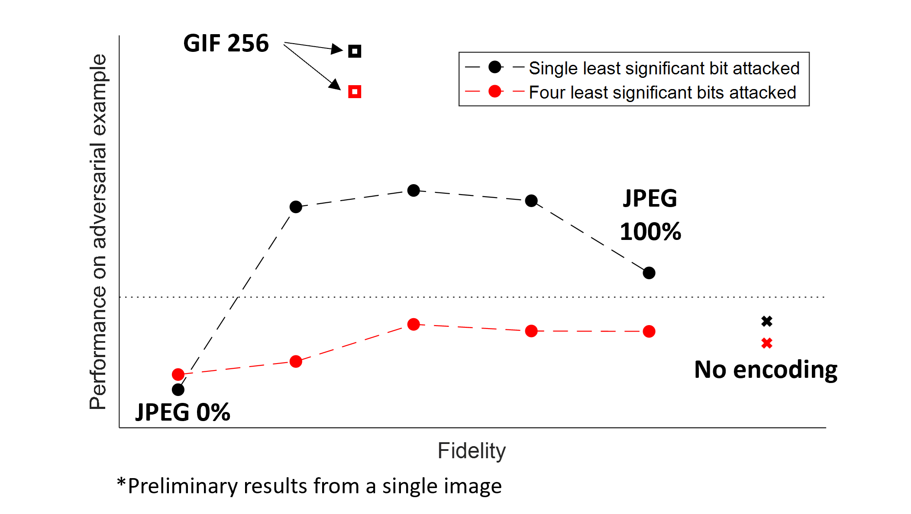

Lossy compression to prevent evasion and poisoning¶
Evasion¶
Exploit knowledge a model that’s already been trained
Example: email spam filter
Attacker wants to avoid detection while preserving the semantic content an email
Full or partial knowledge of model can be used to find “magic words” that cause an email to be classified as not spam
Poisoning¶
Attacker contaminates dataset, usually with the goal of introducing a backdoor
Example: facial recognition
Attacker wants to prevent facial recognition from working on one or more subjects
Attacker uploads altered image to public where dataset is sourced for training
Fast gradient sign method¶

“Robust” features¶
“Overall, attaining models that are robust and interpretable will require explicitly encoding human priors into the training process”

Lossy compression¶

Lossy compression to prevent evasion¶

Lossy compression to prevent evasion¶

Visual perception of quantization¶

Most perturbations are imperceptible if contained in the four least significant bits.
Defending against larger perturbations¶

How lossy to compress?¶

Gradient matching¶
Proposed in 2020 as a more efficient method to poison large datasets
Attacker chooses a specific image and chooses a label that they want the image to be classified as
Using small perturbations to as little as 0.1% of the dataset, the chosen image can be classified as desired by the attacker
Requires larger perturbations that evasion attacks but are still mostly imperceptible
Does not require full knowledge of model architecture. Shown to translate to different models
Example: Poisoning data by assuming a resnet20 model still works when a VGG13 model is trained
Sanitization to prevent poisoning¶

Compressed training to prevent poisoning¶
An attacker wants the poisoning attack to be imperceptible
Requires the “poison” part of the data to be mostly contained in the least significant bits or high frequencies
Instead of training in pixel space, train on quantized transform coefficients
Discards details in the least significant bits as well as high frequencies
Details important for classification are kept
Audio classification: baseline¶
Dataset: Speech commands
One second speech segments of 8 possible words
‘stop,’ ‘down,’ ‘no,’ ‘right,’ ‘go,’ ‘up,’ ‘yes,’ ‘left’
Baseline model:
Input size: \(128 \times 128\) time-frequency distribution represented at full precision
119.52 MiB Feature size
2.26 GFLOPs per pass
Achieves test accuracy of about 84%
Audio classification: VQ + BNN¶
Encode 2x2 time-frequency blocks via vector quantization
Use mini-batch k-means to learn codebook of 16 vectors (4 bits)
Compression ratio of 16:1 (before any entropy coding)
Input size: \(64 \times 64 \times 4\) binary codes
Audio classification: VQ + BNN¶
Input size: \(64 \times 64 \times 4\) binary codes
3.74 MiB feature size
Multiply-accumulate instead of FP
4-way MAC unit uses about 55% of the area of a FP16 FPU
\(4-8 \times\) more power efficient compared to bfloat16
\(>20 \times\) more power efficient compared to FP32
Achieves test accuracy of about 79% (down from baseline of 84%)